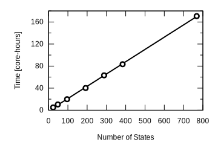

Defect levels - band like or localized?

'First-Principles Modeling of Polaron Formation in TiO2 Polymorphs' A. R. Elmaslmane, M. B. Watkins, and K. P. McKenna, Journal of Chemical Theory and Computation 2018 14 (7), 3740-3751
Generalized Koopman's condition
'First-Principles Modeling of Polaron Formation in TiO2 Polymorphs' A. R. Elmaslmane, M. B. Watkins, and K. P. McKenna, Journal of Chemical Theory and Computation 2018 14 (7), 3740-3751
Generalized Koopman's condition
Parameterize density functionals to satisfy these conditions.
Allows a priori assessment of whether electrons are atom-like or free-electron like.
'First-Principles Modeling of Polaron Formation in TiO2 Polymorphs' A. R. Elmaslmane, M. B. Watkins, and K. P. McKenna, Journal of Chemical Theory and Computation 2018 14 (7), 3740-3751
Transferability
Parameter seem to be OK across polymorphs
Band gaps and defects
Position levels with band gaps and align with external levels (electrodes).
'First-Principles Modeling of Polaron Formation in TiO2 Polymorphs' A. R. Elmaslmane, M. B. Watkins, and K. P. McKenna, Journal of Chemical Theory and Computation 2018 14 (7), 3740-3751
TDDFT - excited states at DFT level
Two main methods to solve the TDKS equations
- Linear-response Time Dependent Density Functional Perturbation Theory
- Real time propagation, see Florian Schiffmann's PhD thesis
both methods are available in CP2K.
We have been working on the Linear Response implementation.
Aim is to enable routine calculation of band gaps and exciton binding energies of surfaces and interfaces.
Electron hole pairs¶
The transition density is a linear combination of $\color{red}{electron}-\color{blue}{hole}$ pairs
\begin{gather*} n_{j, \tau}^{(1)} = \sum_{j \in HOMOs} \left ( \color{blue}{\psi_{j,\sigma}^*} (r) \color{red}{\psi_{j,\sigma}^{(-)}(r)} + \color{red}{\psi_{j,\sigma}^{(-)*}(r)}\color{blue}{ \psi_{j,\sigma}(r)} \right) \end{gather*}
$$ \color{red}{\psi_{i, \sigma}^{(\pm)}(r)} = \sum_{k \in LUMOs} c_{ik, \sigma}\psi_{k,\sigma} (r) $$
$\color{blue}{\psi_{j,\sigma} (r) }$ contributes to the hole, $\color{red}{\psi_{j,\sigma}^{(-)}(r)}$ contributes to the electron.
- Each of the terms in the sum are single determinant excitation in Quantum Chemical language.
- in the ground state the $\psi_{j,\sigma}$ function would be fully occupied, but here density has been transferred to $\psi_{j,\sigma}^{(-)}(r)$ .
- The sum over all the HOMOs allows the hole to relax by mixing in other occupied orbitals.
- Typical transitions will be dominated by a single determinant - mixing of others gives orbital relaxation.
Hybrid functionals¶
the exact exchange energy term in the ground state functional becomes a coulomb type interaction between the electron and hole density for each excitation.
\begin{gather} \mathbf{K_{\nu \mu \sigma}} = \big{<} \phi_{\nu} \big{|} \sum_{\tau=\alpha, \beta} \big{[} \color{green} { c_{HF} \frac{K(r,r')}{ {\mid r' - r\mid}}} + \color{red}{ \int_{r'} \text{d}r' \frac{n_{j, \tau}^{(1)} (r')}{\mid r' - r\mid}} + \color{green}{(1-c_{HF})} f_{XC,\sigma,\tau} (r,r';\pm \omega)) n_{j, \tau}^{(1)} (r') \big{]} \big{|} \phi_{\mu} \big{>} \end{gather}
where the symbolic $\color{green}{K(r,r')}$ operator exchanges electrons, like in HF theory. In this case operating on an exchange type term, it gives an electron-hole coulomb interaction. Symbollically, terms of the form:
$$ \color{green}{ \big<\psi_{HOMOS} (r) \psi_{HOMOS} (r) \big| { \frac{1}{\mid r' - r\mid}} \big| \psi_{LUMOS} (r') \psi_{LUMOS} (r') \big> } $$
Note this is like a coloumb interaction screened by an effective dielectric function equal to $\color{green}{c_{HF}^{-1}}$.
Hybrid terms - gaussians¶
Because of the exchange, it is not possible for the added exact exchange term to be calculated on the grids with iterative diagonalisation:
- Hybrid term is calculated analytically using the existing hybrid functional routines in CP2K
- access to fast ADMM approximation (x1000 speed up for some basis sets)
- works for ADMM with no purification
- works for global hybrids - tested for B3LYP and PBE0
Still looks like standard KS build - but no screening on initial $\mathbf{P}$.
Parallelization and optimization¶
- Each KS build for trial vector is independent - parallelize over groups.
- But - need to diagonalize approximate H, and orthogonalize guess vectors - limits to few groups.
- Reduced PW cutoff - excitations mainly around valence states, much smoother than semi-core
Aside - Tamm-Dancoff approximation¶
only the Tamm-Dancoff approximation to TDDFT is implemented in CP2K at the moment.
In this approximation $\phi^{(+)}_{j\sigma} (r) = 0$ and the equations simplify and become Hermitian.
Hopefully fairly well separated - so full TDDFT can be implemented.
Also no K-points at the moment (or near future).
MgO benchmarking¶
 |
linear scaling with number of states for full TDDFPT |


MgO bulk defects¶
|
Independent particle absorption spectrum 512 atom bulk supercell. $\Gamma$ point only (always in this presentation). |
 |
Broadened absorption spectra for canonical F centres in MgO. Dielectric function consistent PBE0 functional. |
MgO bulk defects¶

|
The F$^0$ defect in MgO has strong absorption peaking at 4.85 eV from a transition between an S-like and a P-like state. The F$^{+1}$ defect in MgO has a lower energy absorption peak at 4.70 from excitation of an alpha spin electron in a gap-state into CB states and a higher energy peak at 5.26 eV which comes from excitation of beta spin electrons in VB states into the unoccupied state in the gap. |
"First principles calculations of optical properties for oxygen vacancies in binary metal oxides", J. Strand, S. Chulkov, MW and A. Shluger, J. Chem. Phys., 150 044702 (2019)
Compatible with AIMD¶
Bulk TDDFT vs KS energies
|
Bulk vs $\big{<}110\big{>}$ surface TDDFT |
HOMO-LUMO gaps and lowest energy excitation from ~2 ps simulation of Rutile TiO$_2$ bulk and surface.
Linear response summary¶
- gives electron transitions and detailed information on the types of transition
- cost will depend on system size, but increase linearly with the number of excited states that you want to calculate
- supports calculations using hybrid functionals and the ADMM approximation
- recent bug fix for unrestricted kernel.
- hybrid TDDFPT + GAPW all electron calculations any time now.
- analytical excited state forces on the way (SAINT).
Why are we interested in excited states and optical properties?¶
- Photochemistry / catalysis
- Energy conversion
- Solar cells
- Spectroscopy
Electron Transport - NEGF
Electron density of states (DOS)
Straightforward approach: $$ \textbf{H}\textbf{C} = \textbf{E}\textbf{S}\textbf{C} \\ \mathrm{DOS}(\omega) = \frac{dN/d\omega}{\Omega} \\ $$
Green's function method $$ \textbf{G}^\mathrm{r}(\omega) = \left(\omega \textbf{S} - \textbf{H}\right)^{-1}\\ \begin{gather*} \mathrm{DOS}(\omega) = -\frac{1}{\pi}\lim_{\eta \to 0^+}\mathrm{Tr}\left\{ \right. \left. \mathrm{Im}\left[ \textbf{G}^\mathrm{r}(\omega+i\eta)\textbf{S}\right]\right\} \end{gather*} $$
Calculation of retarded surface Green's function

Algorithm
Model system

Implemented in CP2K code

|
|
Model system
Model system

Model system
Approximations
Full NEGF can be very expensive and quite hard to interpret.
Various approximations possible neglecting explicit calculations of the coupling in the system to some extent or other.
Good for predicting trends.
Thanks To¶
- ARCHER and EPSRC for funding.
- Jurg Hutter (UoZurich) and the CP2K developers group.
- Iain Bethune, (ex) STFC.
- Alex Shluger's Group (UCL)
- Materials Chemistry Consortium